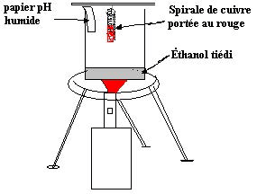

Chapitre II : Les alcools
I - Définition
On appelle alcool un composé organique dans lequel un groupe caractéristique hydroxyle OH est lié à un atome de carbone saturé.
+ Formule générale:
Nomenclature :
- Le nom de l’alcool est formé en ajoutant le suffixe ol au nom de l’hydrocarbure possédant le même nombre d’atomes de carbone que la chaîne principale.
- La chaîne principale est la chaîne la plus longue qui porte le groupe OH.
- La numérotation de la chaîne est choisie de façon que le groupe OH ait le numéro le plus petit.
II - Les classes d’alcools
1. Alcool primaire
Un alcool est dit primaire lorsque le carbone porteur du groupement -OH lié qu’à un seul atome de carbone au plus. La formule générale des alcools primaire est R-CH2-OH ou R est un groupe alkyle ou hydrogène.
2. Alcool secondaire
Un alcool est dit secondaire lorsque le carbone porteur du groupement -OH est lié à deux atomes de carbone. La formule générale des alcools secondaire est:
3. Alcool tertiaire
Un alcool est dit tertiaire lorsque le carbone porteur du groupement -OH est lié à trois atomes de carbone. La formule générale des alcools tertiaire est:
III - Obtention
1. Cas particulier de l'éthanol L'éthanol est l'alcool de pharmacie; il est obtenu par fermentation (dégradation incomplète) de jus sucrés sous l'action de levures (champignons microscopiques) qui en retirent de l"énergie.
C6H12O6 + levures → 2CO2 + 2CH3-CH2-OH + 234KJ/mol
2. Addition d'eau sur les alcènes (hydratation des alcènes).
R-CH=CH2 + H2O ⇌ R-CH(OH)-CH3
Régale de MARKOWNIKOV:
Lors de l'addition d'un hydracide sur un alcène dissymétrique l'atome d'hydrogène se fixe sur l'atome de carbone le moins substitué (plus hydrogéné).
IV - Oxydation des alcools
Les alcools peuvent donner lieu à des réactions d’oxydoréduction.
1. Oxydation complète : la combustion Cette oxydation entraîne la destruction du squelette carboné.
Équation de la combustion d’un alcool dans le dioxygène de l’air :
Exemple: la combustion de l’éthanol dans le dioxygène de l’air :
2. Oxydation ménagée:
Une oxydation est dite ménagée lorsqu’elle ne modifie pas le squelette carboné de la molécule.
a. Oxydation ménagée en phase gazeuse : expérience de la lampe sans flamme Dans un bécher, chauffons doucement quelques cm3 d'éthanol: le liquide est bientôt surmonté d'un mélange d'air et de vapeur d'éthanol. Introduisons alors au-dessous du liquide un fil de cuivre chauffé au rouge (voir fig ci-dessous).

Observations : la spirale reste incandescente, le papier pH indique la présence d’acides. On sent une odeur fruitée.
Conclusion :
- L’éthanol et le dioxygène de l’air réagissent à la surface du cuivre, le dioxygène oxyde l’éthanol.
- La réaction est exothermique car elle maintient le fil de cuivre au rouge.
- L’odeur est caractéristique de l’éthanal, l’acide formé est de l’acide éthanoïque ou acétique.
Équation : Oxydation de l’éthanol en éthanal
b. Oxydation ménagée en phase aqueuse : Les oxydants sont souvent les ions permanganate ou les ions dichromate en solutions acides.
L’oxydation ménagée conduit à des résultats différents selon les classes d’alcools.
b-1 Oxydation par le permanganate de potassium en milieu acide
- Oxydation ménagée d'un alcool primaire
Exemple: Le propan-1-ol
L'ion permanganate (violet) prend des électrons, se transforme en manganèse(II) (incolore) en provoquant une oxydation de l'alcool
MnO4- + 5e- + 8H+ ⇌ Mn2+ + 4H2O
Demi-équations d'oxydoréduction : il doit y avoir autant d'électrons pour l'oxydant que pour le réducteur (d'où les multiplications)
2(MnO4- + 5e- + 8H+ ⇌ Mn2+ + 4H2O)
5(CH3-CH2-CH2-OH ⇌ CH3-CH2-CHO + 2e- + 2H+)
Equation de la réaction : on combine les deux demi-équations en enlevant les électrons
5CH3-CH2-CH2-OH + 2MnO4- 6H+ → 5CH3-CH2-CHO + 2Mn2+ + 8H2O
Le plus souvent, on utilise l'acide sulfurique (2H+ + SO42-) pour acidifier la solution.
Conclusion : L’oxydation ménagée d’un alcool primaire conduit à la formation de l’aldéhyde ayant le même squelette carboné
Remarque :
Si l’oxydant est en excès, il peut ensuite réagir avec l’aldéhyde formé et l’oxyder en acide carboxylique. Suivant les équations:
- Demi-équations d'oxydoréduction :
2(MnO4- + 5e- + 8H+ ⇌ Mn2+ + 4H2O)
5(CH3-CH2-CHO + H2O ⇌ CH3-CH2-COOH + 2e- + 2H+)
Equation de la réaction: On combine les deux demi- équations en enlevant les électrons
5CH3-CH2-CHO + 2MnO4- + 6H+ → 5CH3-CH2-COOH + 2Mn2+ + 3H2O
Conclusion : L’oxydation ménagée d’un aldéhyde conduit à la formation de l’acide carboxylique ayant le même squelette carboné.
b-2 Oxydation par le dichromate de potassium en milieu acide
- Oxydation ménagée d'un alcool secondaire
exemple : Le propan-2-ol
L'ion dichromate (orange) prend des électrons , se transforme en ion chrome(III) vert/bleu) en provoquant une oxydation de l'alcool.
Cr2O72- + 6e- + 14H+ ⇌ 2Cr3+ + 7H2O
Demi-équations d'oxydoréduction : il doit y avoir autant d'électrons pour l'oxydant que pour le réducteur (d'où les multiplications)
(Cr2O72- + 6e- + 14H+ ⇌ 2Cr3+ + 7H2O)
3(CH3-CH(OH)-CH3 ⇌ CH3-CO-CH3 + 2e- 2H+)
Equation de la réaction : on combine les deux demi-équations en enlevant les électrons
3CH3-CH(OH)-CH3 + Cr2O72- + 8H+ → 3CH3-CO-CH3 + 2Cr3+ + 7H2O
Conclusion : L’oxydation ménagée d’un alcool secondaire conduit à la formation de la cétone ayant le même squelette carboné que l’oxydant soit en excès ou en défaut.
- Oxydation ménagée d'un alcool tertiaire
Un alcool tertiaire ne subit pas d’oxydation ménagée.
V - Réaction de déshydratation des alcools
VI - Identification des aldéhydes et des cétones
Les aldéhydes R-CO-H et les cétones R-CO-R' ont en commun le groupement C=O appelé groupement carbonyle, c'est ce qui permettra de les distinguer des autres composés par le test à la DNPH.
1- Tests de reconnaissance des carbonyles Aldéhydes et cétones donnent un précipité jaune en présence de 2,4-dinitrophénylhydrazine (2,4-DNPH).
Suivant l'équation:
Ce test permet de reconnaître la fonction carbonyle, mais pas de différencier les aldéhydes et les cétones.
En revanche, il existe des tests de reconnaissance des aldéhydes : la liqueur de Fehling,le réactif de Schiff et le nitrate d'argent ammoniacal(appelé aussi miroir d’argent).
2-Tests spécifiques des aldéhydes:
L'oxydation ménagée des alcools nous a montré que les aldéhydes peuvent subir une oxydation en acide carboxyliques. Par contre les cétones restent inaltérées. L'atome d'hydrogène que porte le groupement carbonyle dans les aldéhydes confère donc à ces composés un caractère réducteur que n'ont pas les cétones ;les tests différenciant les cétones des aldéhydes seront donc des réactions d'oxydations des aldéhydes.
a. Réactif de Schiff:
Le réactif de Schiff se prépare en faisant réagir du SO2 sur une solution de fuchsine (colorant rouge violacé).
- Il est incolore.
- Il vire au rose par perte de SO2 l’ajout d’aldéhyde le fait virer au rose violacé
- S’il est chauffé, il peut virer (teinte néanmoins plus rouge)
- Il vire en milieu basique
- Il peut virer par oxydation
- Il peut également virer par ajout de certain alcool, il convient d’utiliser le réactif de Schiff en milieu neutre (voir légèrement acide) et à froid. A cause de ces nombreux inconvénients, on préférera utiliser la liqueur de Fehling ou le réactif de Tollens(nitrate d'argent ammoniacal ).
b. La liqueur de Fehling
La solution de Fehling (ou liqueur de Fehling) est un complexe basique d’ion cuivre II (Cu2+) par les ions tartrate (–OOC-CHOH-CHOH-COO-).
La réaction de Fehling est une réaction caractéristique des aldéhydes.
Au cours de la réaction, le cuivre oxyde l'aldéhyde pour donner un acide selon la réaction bilan d'oxydo-réduction générale :
R-CHO + 2Cu2+(aq) + 5HO-(aq) → R-COO- + Cu2O(s) + 3H2O
La liqueur de Fehling initialement bleue (image 1) précipite en un dépôt de couleur rouge brique à chaud (image 2).
c. réactif de Tollens
Le réactif de Tollens est une solution de l’ion complexe diamine argent Ag(NH3)+2
Chauffé doucement en présence d’un aldéhyde, cet ion est réduit en argent métallique qui se dépose sur les parois du tube à essais, formant ainsi un miroir d’argent. L’ion argent est réduit en argent métal, l’aldéhyde est oxydé en ion carboxylate.